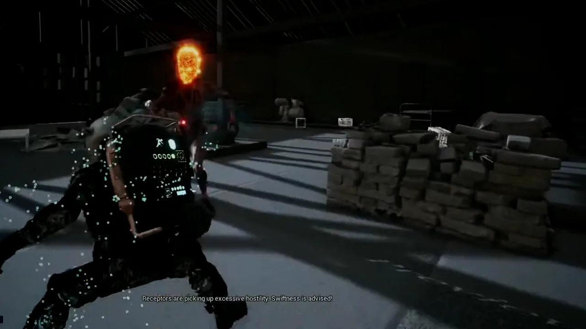
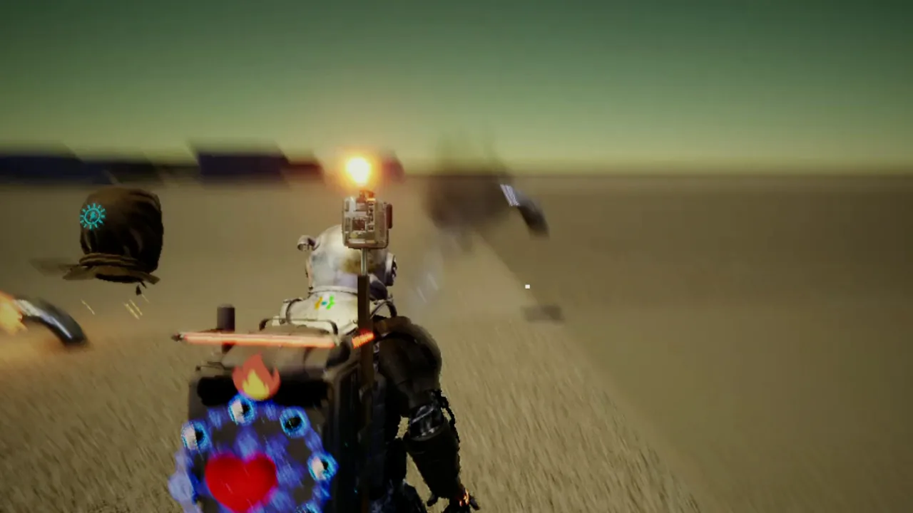
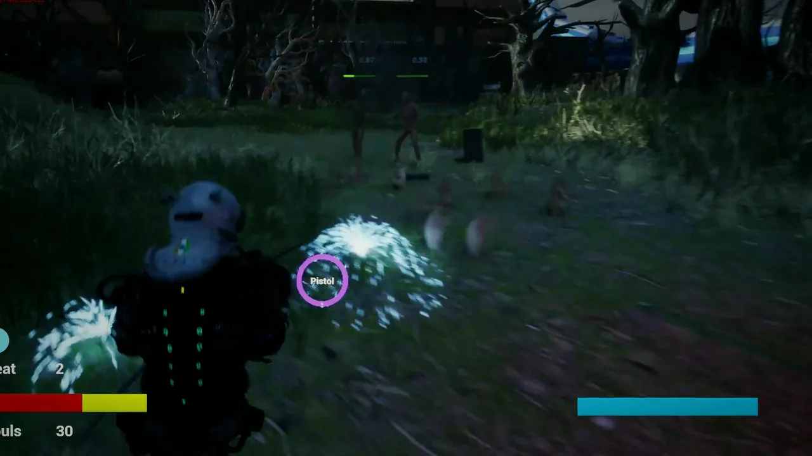

What this deep dive covers
- What the game is, and the four names it had between 2020 and 2025
- The 2020 concept and footage from 2021 to 2025, from the first third-person movement tests to the showcase level
- The combat director and attack tickets, the bow, and the editors the designers used
- My role as the only programmer in a team of four, building only in Blueprints, and where the project stands now
What the game is
You play a police officer who comes home to his village in Himachal, where something strange has started to open. In the jungle he meets Vetal, a spirit, and the two become partners.
Together they travel through corrupted areas and collect the stories they find there. You feed each story to Vetal, he grants a boon in return, and you use the boons to beat enemies. Runs follow a roguelite structure.
The project ran from 2020 to 2025 under four names.
- Perfect Me
- Project Ego
- Project Mind
- VETAL 26
A top-down action-horror game
The project started as a top-down, isometric action-horror game in Unreal Engine 4, called Perfect Me. The player could turn into other objects to slip past enemies.
Third-person action-adventure
The team turned the game into a third-person action-adventure with melee combat and several enemy types. The first third-person build was about movement: running, dashing and side-stepping along a night street, with energy and health bars already on screen.
The same year the team decided to add Vetal, a spirit companion who travels with the player. He is not in the 2021 footage, and the game was later named after him.
I built the first locomotion myself from free Mixamo animations: blend spaces, montages, root motion and hand IK. It worked but did not look good, as the 2021 clips show. Later the game moved to the Advanced Locomotion System, with its montages and blend spaces adapted to our characters.


Combat, more enemy types and a companion
Under its new name, Project Ego, most of 2022 went into combat. Melee gained a blocking shield, hit sparks and fire attacks, and the new enemy types included ones that fire from range.
Vetal was added this year and given powers. In two of the clips below, a hooded companion floats beside the player. At first he was simply attached to the player and floated through walls, so I added a collision check that slides him from one shoulder to the other when something is in the way.
For a long time the main attack was an arm that stretched out like a cable. I fired a line from the camera to the centre of the screen, extended a spline cable to that point and put damage colliders along it. It never felt fun in playtests, so at the end of 2022 we replaced it with a bow and arrow. The bow fit the story and gave us projectiles to design around. Every 2022 clip comes from the melee builds, and the bow appears in the 2025 footage further down.
Aiming a bow over the shoulder has a catch: something can block the path between the bow and the point the camera aims at. I traced two lines, one from the arrow along its direction and one from the camera through the centre of the screen, and sent the arrow to where they met. A tunable leeway still lets the arrow reach the centre of the screen when an object blocks the bow’s own line, so an enemy in the crosshair can always be hit.




Enemy AI, bosses and the attack ticket system
I expanded the enemy AI and built the boss system. Group fights were the hard part: if every enemy in an arena attacks at once, the player cannot read the fight.
I added an attack ticket system so enemies could surround the player without all attacking at once. An enemy may attack only while it holds a ticket. In the test-map footage below, a melee enemy closes in while a ranged enemy hangs back.
A combat manager placed in each level acts as the director. It started with two tickets and was later tuned to two normal attacks and one special attack for the later stages. Enemy types include melee fighters, mid-range spitters, snipers, a flying enemy whose three projectiles merge into a laser aimed where the player is about to be, and mini-bosses that leap in and smash the ground.
Each enemy type has its own EQS query that scores distance to its attack range, current distance, line of sight and, for ranged enemies, a clear shot. The director weighs those scores into a queue and hands out tickets in mixed pairs: one ranged and one melee when it can, otherwise two melee, or one melee and one special, with a priority list for specials. If three melee enemies want to attack, two get tickets and the third waits in an attack position until one frees up. Each enemy’s Behavior Tree handles the rest.
Before this, fights were hard to read. With the director, designers set the number of waves, their length and the enemy types in each, and could tune every encounter without me.
The game also got its final loop this year: you collect stories and trade them to Vetal for boons, run after run. The project was renamed Project Mind, and a new player character with spirit abilities replaced the old one.
I built the loop so the designers could fill it without me. A boon is a struct: a designer picks any stat, such as an arrow type, one of Vetal’s abilities, an enemy behaviour or a player stat, says what the boon does to it, names it and adds a row to a data table. Stories work the same way. A kahaani, a long story, is made of kathas, single paragraphs the player collects, and the designers wrote them in a story editor built on the same struct and data table pattern. That made it quick to playtest a lot of boon ideas.


Final designs for Vetal and the player
The core design stayed the same in 2024, and the work went into finishing it. Vetal and the player character reached their final designs.
The game also moved off the test maps into a lit forest level. The first clip below is a crowd fight in an arena, with a few enemies closing in at a time while the rest wait.



A showcase level, playable start to finish
In 2025 our team built a showcase level with a complete playthrough and cut the July pre-alpha trailer from it. I programmed the systems the level brings together. The player fights with a bow, uses Vetal’s powers and trades a story for a boon that changes defence, health or movement speed.


My role
I was the only programmer, and the other three were game designers. Everything was built in Unreal Blueprints: the combat, the enemy AI and bosses, the attack ticket system, Vetal’s powers and the loop of trading stories for boons. Outside programming I worked on lighting, characters, animation, locomotion and enemies.
I learned Unreal on this project. The first year went into prototyping mechanics in different ways, until I knew I could build any mechanic, even if not in the best way. Over the next two years I learned to apply object-oriented design in Blueprints: classes for enemies, a shared interface for gameplay events instead of level Blueprints, and later data tables and components that fit together into modular systems the designers could play with.
Blueprints were a deliberate choice. Nobody else on the team was a programmer, and the designers needed to open and change everything. Blueprints and Behavior Trees gave me all I needed, but I knew we would have to rebuild parts if more programmers joined. If I started again, I would write the core systems in C++ and expose them to Blueprints.
I also ran the team’s source control. We used Git for the first year, then moved to Perforce on an AWS server I set up, because Perforce handles Unreal’s binary Blueprint files better. The team began remotely during the pandemic and later worked in the same room often.
A bug that shows how games are held together
Unreal has no navigation for flying enemies, and we had little time, so our flying enemy walks on the ground like every other enemy, with its rig and capsule on the floor. I lifted only its mesh into the air and animated it, and the mesh became its hit box. Then its health bar appeared on the ground, because health bars spawn at a fixed height above the capsule. The fix was small: the widget now takes a position offset instead of always using the capsule height. The bug only existed because of the earlier shortcut. It shows how much of a game is smoke and mirrors behind the scenes.
Paused pre-alpha
Development paused after the pre-alpha showcase. Continuing the game needed a bigger budget than the team of four could fund. The four of us who started it co-own it.